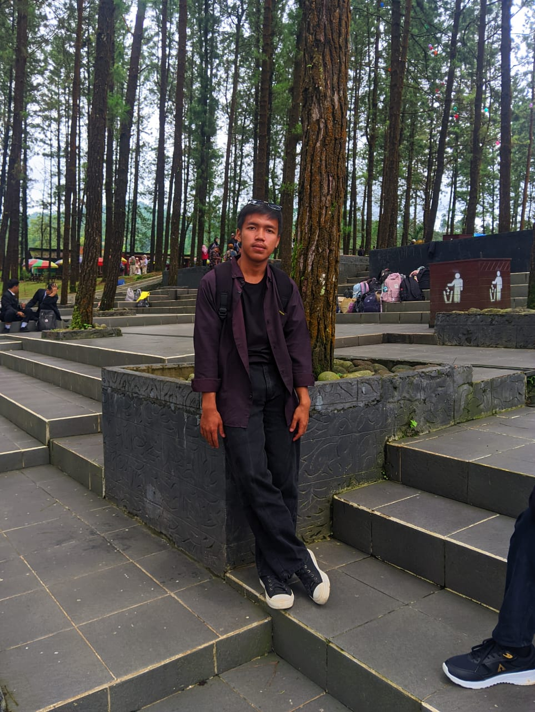

Mahasiswa Sistem Informasi Univ. Komputama Cilacap yang berdedikasi menciptakan solusi digital cerdas. Menggabungkan logika teknologi untuk efisiensi di berbagai sektor masa depan.
Kenali Saya
Muhammad Iqbal Ramadhani
Tentang Saya
Saya adalah mahasiswa Sistem Informasi yang memiliki minat besar dalam integrasi teknologi. Target utama saya adalah menerapkan ilmu IT untuk modernisasi sektor riil, seperti menciptakan sistem manajemen budidaya yang terukur dan efisien. Saya percaya bahwa data dan sistem informasi adalah kunci untuk kemajuan berkelanjutan.
Keahlian Utama
Daftar Proyek Sistem
Smart Farming 300+
Digitalisasi manajemen budidaya untuk pengelolaan 300+ unit secara presisi.
E-Library System
Sistem manajemen sirkulasi buku untuk efisiensi literasi asrama.
Digital Attendance
Absensi digital untuk akurasi pendataan kehadiran operasional harian.
Pendidikan
S1 Sistem Informasi
Univ. Komputama Cilacap (Aktif)
SMK Ma'arif NU 01 Sumpiuh
Lulusan Bidang Teknik
Hobi & Pribadi
Olahraga Lari
Melatih disiplin, ketahanan, fisik harian.
Eksplorasi Logika
Memecahkan masalah sistematis algoritma.
Mari Berkolaborasi
Terbuka untuk diskusi mengenai inovasi Agri-Tech atau proyek pengembangan sistem informasi lainnya.